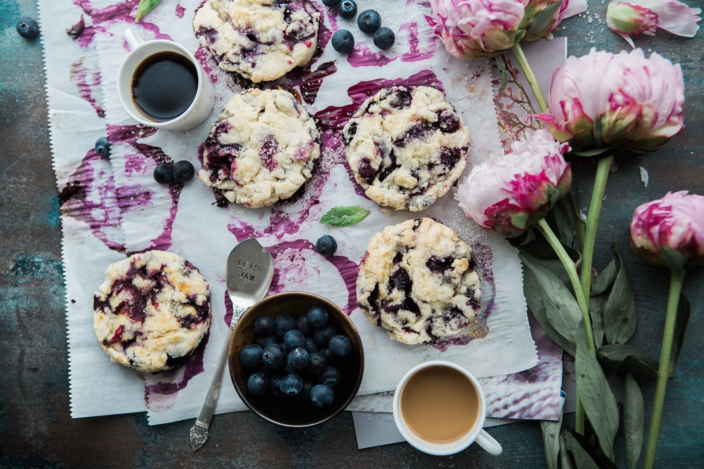
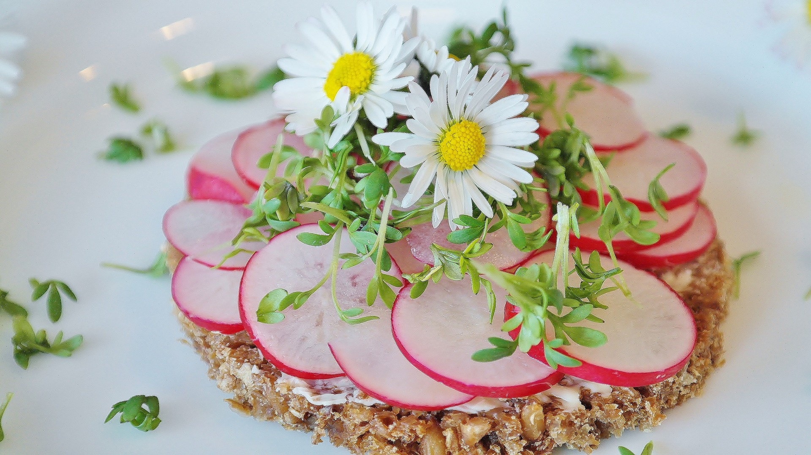
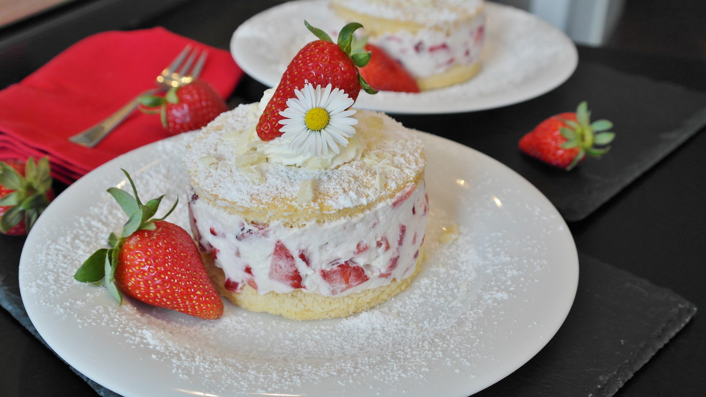
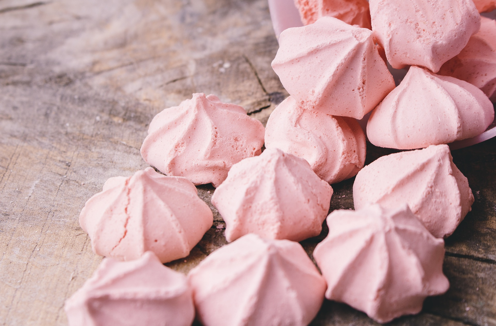

들꽃이 지향하는 들꽃 떡 & Cake menu

들꽃 무화과 바게트
잘익은 무화과와 맛있는 바게트의 조화를 맛 본 적
있으신가요? 무화과의 표현하기 어려운 달콤함이
바싹 촉촉한 바게트와 조화를 이뤄 당신이 한 번도
맛 본 적 없는 즐거움을 선사할 것입니다.
10,000원

산딸기 & 팬지쨈 쿠키
산딸기와 팬지의 달콤함과 통밀쿠키의 궁합의 환타지!!
촉촉한 쿠키와 아삭톡톡 씹히는 산딸기, 팬지의 은은한 단
맛은 들꽃에서만 만날 수 있는 특별함을 선물할 것입니다.
저절로 미소가 머금어 지는 맛을 경험 할 수 있답니다.
10,000원

들꽃 딸기 & 크림 비스켓
딸기와 생크림의 환상적인 조화는 누구라도 마다할 수 없는 조합이죠. 하지만 들꽃에서 채취한 딸기와 농원에서 만든 우유로 만든 생크림을 얹은 비스킷은 한 번 맛보면 끊을 수 없는 중독성이 있어, 마약비스킷이란 이름으로 더 많이 불리고 있답니다.
5,000원
5,000원

들꽃 장식 생크림 케이크
철마다 피어나는 들꽃을 얹고, 제철 과일을 넣은 생크림 케이크는 들꽃이 자랑하는 디저트 메뉴입니다. 차마 먹지 못 할 비주얼 아닌가요? 그래도 먹지 않으면 분명 후회하게 될 맛이니 두 눈 꼭 감고, 한 입 먹어보세요. 분명 감탄할 거예요.
15,000원 / 25,000원
15,000원 / 25,000원

들꽃 마카롱
과일과 들꽃을 갈아 넣어 만든 마카롱은 일반 마카롱과 달리 달달함의 차원이 다르답니다. 한 두 개 먹으면 질려버리는 일반 마카롱의 단맛이 아니라 건강함을 충전해 주는 단맛이라 남녀노소 누구라도 추천해 줄 맛이랍니다. 피곤할 때 꼭 드셔야 할 들꽃의 추천메뉴입니다.
5,000원 / 10,000원
5,000원 / 10,000원

들꽃 머랭
바싹하고 달달한 머랭은 선물하기 좋은 디저트 메뉴입니다. 포장용으로 판매하고 있어 인기만점이구요. 마카롱처럼 천연의 단맛이 바로 인기만점의 비결이랍니다. 모양이 작고 앙증맞아 인기있는 머랭, 선물할 곳이 있으시면 강력 추천합니다.
5,000원 / 10,000원
5,000원 / 10,000원

들꽃 산딸기 토핑 시루떡
시루떡하면 젊은이들은 싫어한다고 생각하신다면 일면 한 번 드셔보시라고 권하는 메뉴입니다. 밀가로보다 훨씬 소화도 잘 되고 맛도 부드러워, 전통떡의 선입견을 없앨 수 있는 메뉴입니다. 살짝 얼린 산딸기와 함께 얹어 먹으면 새로운 맛을 경험할 수 있어요.
10,000원 /15,000원
10,000원 /15,000원

들꽃 오렌지 푸딩
오렌지 껍질이 사각사삭 씹히는 푸딩을 본 적 있으신가요? 아직 경험해 보지 않으셨다면 들꽃에서 한 번 경험해 보세요.
푸딩의 신세계를 알 수 있을 거예요. 푸딩을 싫어하는 분들도 푸딩을 좋아하게 되는 맛이라고 적극 추천하는 메뉴입니다.
5,000원 / 10,000원
5,000원 / 10,000원